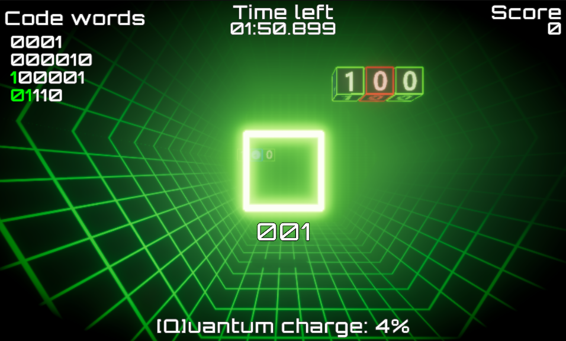

Game / Ludum Dare 59
Bitcatcher
Catch streaming bits and assemble valid codewords before time runs out.

About the game
In Bitcatcher, you control a receiver moving through a data stream, catching bits and trying to assemble valid codewords before time runs out. Position yourself carefully, collect the right zeros and ones, and build sequences such as 0110110 without making a mistake. Keep an eye out for the elusive Quantum bits.